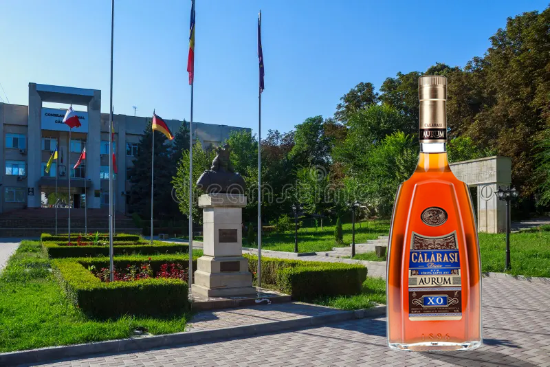
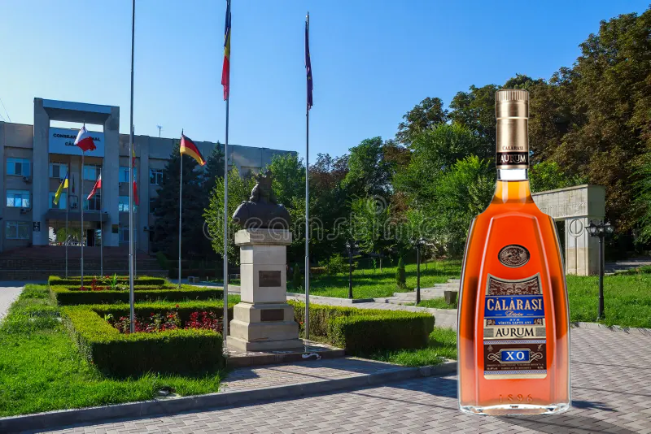

Despre Moldova
Republica Moldova este o țară cu tradiții bogate, cunoscută pentru ospitalitate, peisaje frumoase și vinuri renumite. Relieful este predominant de dealuri, iar cultura îmbină influențe românești, slave și balcanice. Capitala este Chișinău, un oraș verde și foarte liniștit.
Mergi la ContactOrașe importante
- Chișinău
- Bălți
- Soroca
- Orhei
Mâncăruri tradiționale
- Mămăligă cu brânză
- Sarmale
- Plăcinte
- Zeamă
Harta Moldovei
Apasă pe un oraș pentru mai multe informații.

Galerie Foto
Imagini din diferite orașe și regiuni ale Moldovei.


 



Date generale
| Monedă | Limbă | Capitală |
|---|---|---|
| MDL | Română | Chișinău |
Chișinău pe hartă
Feedback
Contact
Pentru întrebări: contact@moldova.md